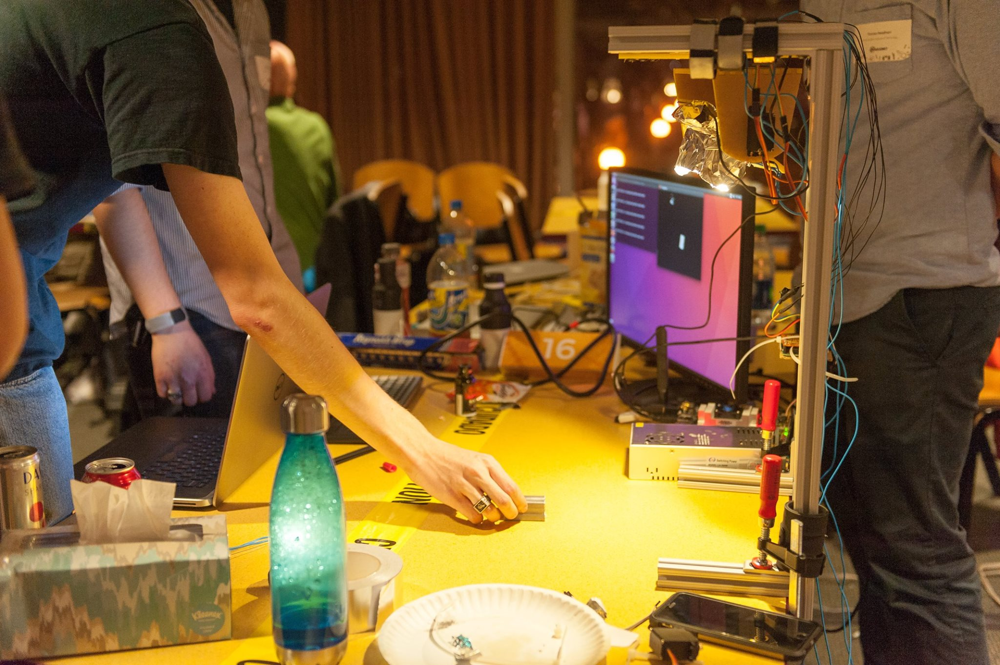
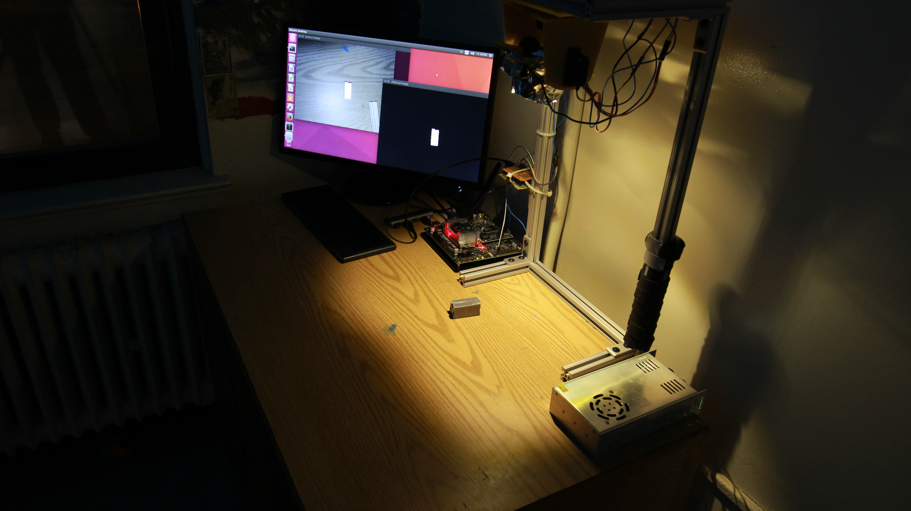
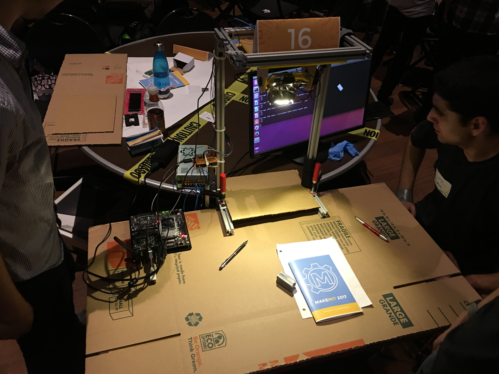

LUX
LUX was a hackathon project aimed at exploring different applications of computer vision. Its designed for all those times you need a flashlight but your two hands are full.Highlights
Expandable platform
Easy to expand and add more tracking lights and cameras.Passive Trackers
Trackers are easy to manufacture and can be made into any number objects.Collaborative
Work together with friends. Objects being tracked and the tracking units can be dynamically paired.Many Uses
The LUX platform can be used in plenty of different places. It supports large systems with one base station, or smaller portable lights with a complete tracking system.Team 16
We're a lovable gang of engineers from MIT. Find out more about us here.LUX
What is it? LUX (Light Under eXamination - we tried) was a hackathon project aimed at exploring the applications of computer vision.Overview
Computer vision systems are becoming more accesible and prolific in everyday computing. It is being used and integrated with autonomous vehicles, facial recognition, augmented reality, and gesture control.
One of the principle goals of this project was to find more novel use cases for computer vision systems. As more hands on engineers, we wanted to develop a system that could be applied in a shop / workbench setting. A problem that we quickly noticed while trying to brainstorm was that we kept having to move lights around while we making simple models and diagrams. With that the idea was born: a autonomous light tracking system.
Key Design Goals and Features
LUX was developed with a few key tenants in mind to build out a robust platform:
- Make the platform easy to expand and capable of adding more lights and cameras.
- Trackers should be passive to avoid added complexity.
- Multi-trackers and multi-camera setups should be supported to allow for collaboration.
- Make shifting of tracking objects as effortless of possible.
Initial Prototype and Development
We created the initial prototype at MakeMIT 2017, a hardware hackathon sponsored by MIT. When going about the design of system, we wanted to figure out a way to simplify the tracking aspects to make it as performant as possible. This way we would be able to port over the system to simplier and lighter platforms such as Raspberry Pi's to keep over costs low.
We did some initial experimenting with IR tracking systems but found that using active trackers with IR LEDs would add too much complexity. So instead we decided to use a combination of retro-reflective material and simply look for the brightest spot that the camera can see.
 Picture of our mostly finished prototype taken during MakeMIT 2017.
We were able to do this for a few key reasons. For one, since we were trying to cast a spotlight on the tracker in question we knew that it would, in theory, be well lit and bright. Second, if we were able to put the camera right at the light source and that these would always be moving in sync. Due to the retro-reflective material reflecting the majority of the light that is cast on it back to its source, we could simply look for the brightest spot on the screen and track it.
 Picture of our assembled prototype from MakeMIT 2017.
In terms of components, we used a Nvidia Jetson TX1 for the principle computer vision. This communicated with an Arduino through serial which controled the servos attached to the light and camera. For a camera, we used a standard off-the-shelve webcam. The Nvidia Jetson in the end was a bit overkill for our demo.
On the software demo side, we used OpenCV for general computer vision and tracking, CSerial for serial communication. We spent a large portion of our time wrestling with C++ and the different libraries in question to make sure everything would work together. The software itself makes a few assumptions that dramatically cut down on computation costs. The first of these was that we were only concerned with the brightness of the images that we were receiving. Second, we were only concerned with the brightest sections of the image. This allowed us to filter out the bottom 90% bightest parts of the image, dramatically reducing noise. The results of this were on the platform that we were using, the Jetson TX1, we were fully utilizing the 30fps that we were receiving from the webcam. Moreover, our demo streamed multiple version of the images that we were processing in realtime. In a production version of LUX, this would be removed to further improve performance. Additionally we added a weight or stickiness factor to the tracked objects. This allowed us to reduce jitter as well as easily support multiple trackers.
 Picture of our assembled prototype from MakeMIT 2017.
Multiple tracker support from a user experience amounts to simply moving the desired tracker close to the light first and then pulling away. This would cause the tracker to blow up and be the brightest tracking point, making the system lock on to the tracker and continue to follow in the presence of other trackers in view. When you want to switch which tracker is being tracked, you can simply move the tracker close to the camera again to steal the light's focus.
Future Plans
The next logical steps for the project are to both scale up and down. We plan on making multiple of the tracking units, and then attaching them to the single base station. Based on rough performance estimates, we believe that we would be able to power 6 of the tracking units with a single Nvidia Jetson TX1 with minimal changes to our software stack. In terms of scaling down, we also want to port this system over to a Raspberry Pi and further optimize to see how small of platform we would be able to use to power a single light.
Once we have found the smallest computation platform we would be able to use, we would want to try to make a portable light that would also function as tracking light. This ideally would be small enough for mechanics to use while working under a car.
Team 16
The team got together to work on this project idea at MakeMIT (2017). Comprised of 5 undergraduates from MIT, 4 seniors and 1 sophomore. 4 of the members, were part of the team that created Force Feel'd.David Rosales launch
Sophomore at MIT studying Computer Science.Worked heavily on the software side of LUX. Wrote the majority of the tracking software that ran on the Jetson TX1. Also devised and implemented the weighted tracking functions as well as fine-tuned the various software parameters for polishing the demo.
Everardo Rosales launch
Computer Systems Engineer. Operating systems, computer architecture, fullstack web development, etc. Currently a Senior at MIT majoring in Computer Science and loves building, hacking, and creating random projects.On the software sides of the project with David. I was specifically in charge of system setup and integration of the different systems we used. This really just amounted to wrestling with everything to make sure all of the required configurations were set and everything could be built. Lots of pair programming with David.
Joshua Sloane
Electrical engineer with experience in embedded design and IC design. A Senior at MIT majoring in electrical engineering.For LUX, he did the electronics design and assembly, along with the needed microcontroller programing to interface with the servos and the computer. He also worked on both the microcontroller and computer side debugging the interface to ensure reliability. Finally he set up some capacitive touch buttons for controlling the light's brightness.
Joanna Zhu launch
Joanna is a fourth year student in mechanical engineering. She specializes in product design and has an interest in thermodynamics, fluid flow and materials.For LUX, she made the CAD models that we used to laser cut and 3D print for fittings. Worked closely with Thomas to build the physical/mechanical side of the demo as well as the individual trackers.
Thomas Needham launch
Hands-on mechatronics Senior at MIT interested in working on the behind-the-scenes portions of new tech. Structures, controls, robotics, automation, and solving problems such that the user doesn't even notice.In building Lux, Thomas worked on the mechanical architecture for the gantry and plastic frame. Each had a design to be built that day, and a concept of how it could be produced en mass to better work for the user. Throughout the day he pieced together components, manufactured and assembled subsystems, and troubleshot continuously. Additionally, he helped to define features of the device, specify and source parts, and communicate the capabilities of Lux.